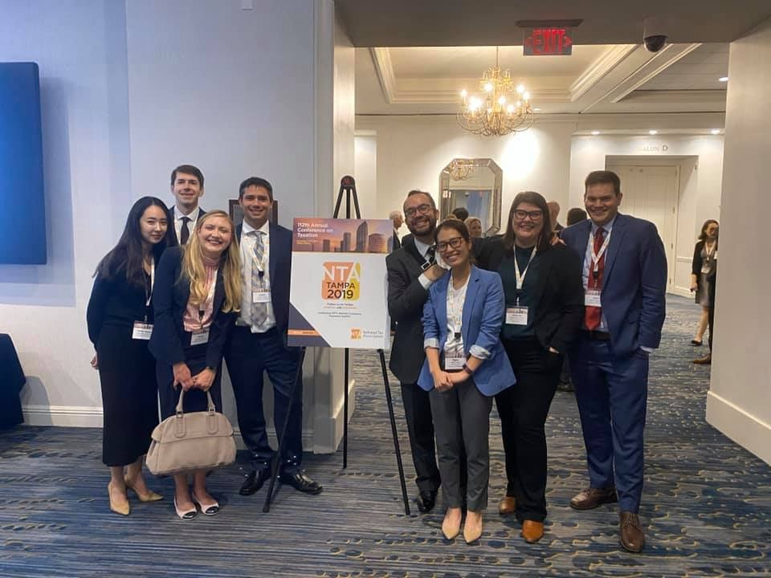

With current and past students at the NTA in Tampa (2019)
Luis Navarro, Public Affairs (Adviser)
Thesis: Subnational Borrowing under Liquidity Constraints
Placement: Assistant Professor at University of Washington, Evans School of Public Policy
Lanjun Peng, Public Affairs (Adviser)
Thesis: Bureaucracy and Regulation in Public Finance
Placement: Assistant Professor at Arizona State University, School of Public Affairs
John Stavick, Public Affairs (Adviser)
Thesis: State Budgeting and Public Employee Turnover
Placement: Assistant Professor at Oakland University, Department of Political Science
Ruth Winecoff, Public Affairs (Committee)
Thesis: Networks, Regulation, and Borrowing Costs in the Public Sector
Placement: Assistant Professor at Rutgers University-New Brunswick
Felipe A. Lozano Rojas, Public Affairs (Adviser)
Thesis: Instrument Design and Effectiveness in Social Policies
Placement: Assistant Professor at University of Georgia
Julio Zambrano, Public Affairs (Committee)
Thesis: The Role of Sectoral Diversity on Collaborative Governance and Citizen Co-Production
Placement: Fulbright Scholar
Sian Mughan, Public Affairs (Adviser)
Thesis: Criminal Justice and Public Finance
Placement: Associate Professor at Arizona State University
Lindsey Bullinger, Public Affairs (Committee)
Thesis: The Effect of Social Policy on Child and Family Health and Well-Being in the United States.
Current Position: Associate Professor at Georgia Tech School of Public Policy
Lang Kate Yang, Public Affairs (Adviser)
Thesis: “Fiscal Federalism and Distressed Localities: An Empirical Analysis”
Current Position: Associate Professor at George Washington University, Trachtenberg School of Public Policy
Thomas Luke Spreen, Public Affairs (Committee)
Thesis: “An Empirical Analysis of Behavioral Responses to State Income Taxes”
Current Position: Associate Professor at University of Maryland, School of Public Policy
Sarah Larson, Public Policy (Adviser)
Thesis: “A Case of Rational Irrationality: Evidence of Expressive Interest Bias in State e-Commerce Sales and Use Tax Legislation.” [Defended May 2014]
Current Position: Associate Professor, Miami University of Ohio, Department of Political Science
Daniel Hummel, Public Affairs at Florida Atlantic University (Committee)
Thesis: “Right-Sizing Cities: Strategies and Fiscal Health.”
Current Position: Assistant professor of public administration at Michigan State University-Flint.
Tima Tilek-uulu Moldogaziev (Committee)
Thesis: “Information Economics in Insurance Markets for Municipal Debt Securities: Monoline Insurance in Primary and Secondary Trades.”
Current Position: Associate Professor, School of Public & International Affairs, University of Georgia.
Olha Krupa, Public Affairs (Committee)
Thesis: “Market Value-Based Assessment System in Property Taxation: Equity, Institutional Determinants, and Cost Considerations.”
Current Position: Associate professor in Institute of Public Service at Seattle University.
Sergio Villamayor-Tomas, Public Policy (Committee)
Thesis: “Understanding Robustness Through the Theory of the Commons: Irrigation Water Governance and Socio-Ecological Robustness in the Gallego and Cinca River Watersheds, Spain.”
Current Position: Researcher of Resource Economics at Humboldt University of Berlin.
Natalia Ermasova, Public Affairs (Committee)
Thesis: “Capital Budgeting at the State Level: Empirical Analysis from the Economic Downturn to the Present.”
Current Position: Assistant professor of public affairs at Governors State University.
Cheol Liu, Public Affairs (Committee)
Thesis: “Impact of Public Officials’ Corruption on State Spending.”
Initial Placement: Assistant Professor at City University of Hong Kong, Department of Public & Social Administration
Current Position: KDI School of Public Policy and Management
Beth Neary, Public Affairs (Committee)
Thesis: “Paid Parental Leave in the United States: What We Can Learn from Existing International and Domestic Policies and How We Can Move Forward.”
Initial Placement: Assistant Professor of Public Policy at the University of Connecticut.
Michael Cox, Public Policy (Committee)
Thesis: “Exploring the Dynamics of Social-Ecological Systems: The Case of the Taos Valley Acequias.”
Initial Placement: Assistant Professor of Environmental Studies at Dartmouth College.
Current Position: Associate Professor of Environmental Studies at Dartmouth College.
Susane Leguizamon, Economics at West Virginia University (Committee)
Thesis: “Keeping up with the Jonses, Staying Ahead of the Smiths: Three Essays on Relative House Size and House Price.”
Initial Placement: Department of Economics Lecturer at Pennsylvania State University.
Current Position: Associate Professor of Economics at Western Kentucky University
Janey Quian Wang, Public Affairs (Committee)
Thesis: “Redistributive Budget, Intergovernmental Transfers, and Fiscal Institutions.”
Current Position: Associate Professor of Public Administration at San Francisco State University.